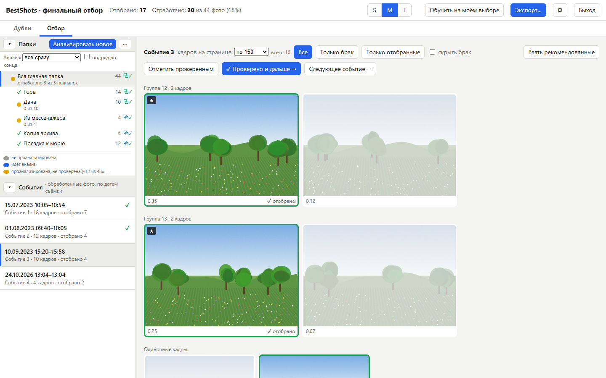
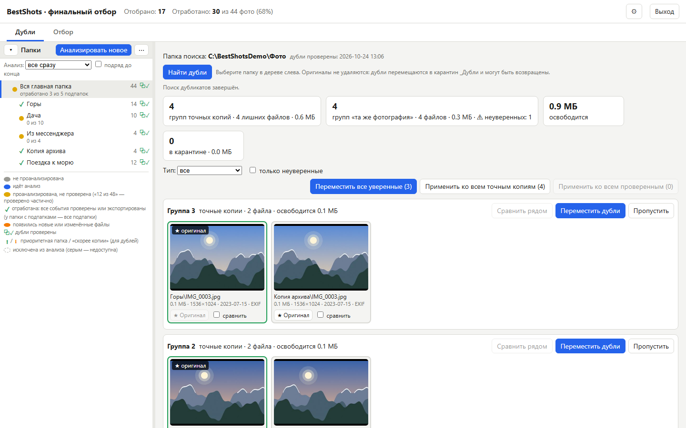
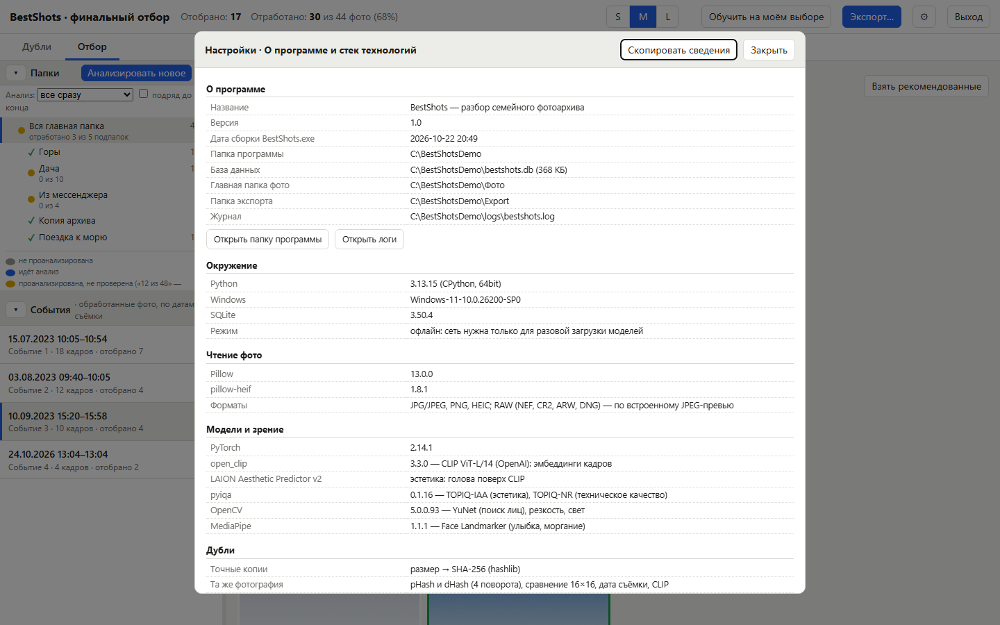

Лучшие кадры из семейного архива —
без облака и без рутины
BestShots выбирает лучшие фото в тысячах снимков, убирает дубликаты и учится на вашем выборе. Всё работает на вашем компьютере: фотографии никуда не отправляются.

Что умеет
От сырого архива на десятки тысяч снимков — до аккуратной подборки лучшего.
Отбор лучших кадров
Фото группируются в события по дате съёмки. В каждом событии система предлагает лучшие кадры; смаз, тёмные и пересвеченные не предлагаются. Решает всегда человек: клик — отобрать или снять.
Эмоции и эстетика
Эстетика (CLIP + LAION, TOPIQ), техническое качество, лица, улыбка и моргание. Улыбка — только бонус: спокойные портреты не страдают.
Обучение на вашем выборе
Личная модель учится на событиях, которые вы отметили «Проверено», и включается, только если угадывает лучше базовой оценки.
Дубликаты
Точные копии и «та же фотография» (пересохранённые, уменьшенные, повёрнутые, из мессенджеров). Дубли уходят в карантин с журналом и кнопкой «Вернуть» — оригиналы не удаляются никогда.
Большие архивы
Анализ порциями «подряд до конца», события листаются страницами, всё считается на CPU и продолжается с места остановки.
Офлайн и приватность
Сеть нужна один раз — скачать модели. Сервер слушает только 127.0.0.1, исходные фото только читаются, телеметрии нет.
Как это выглядит
Скриншоты сделаны на сгенерированных пейзажах — без реальных людей и личных фото.


Как это работает
- Выберите главную папку с фото (подпапки любой вложенности). Цвет папки показывает, что уже обработано.
- Найдите дубли (по желанию) и перенесите их в карантин одной кнопкой.
- Запустите анализ. Для больших архивов — порциями по 500–5000 фото; результат виден после каждой порции.
- Просмотрите события и нажимайте «Проверено и дальше». Система уже отметила лучшее — вы только поправляете.
- Экспортируйте отобранное из проверенных событий в папку по годам. Программа учится на вашем выборе.
Технологии
Всё локально, на CPU; видеокарта не нужна.
Системные требования
| Система | Windows 10/11 (для окна нужен Edge WebView2 — есть в Windows 11) |
|---|---|
| Python | 3.11–3.13 |
| Место на диске | около 5 ГБ: окружение ≈ 2 ГБ, модели ≈ 3 ГБ (скачиваются при первом запуске) |
| Память и процессор | 8 ГБ ОЗУ и больше; GPU не нужен. Анализ — десятки кадров в минуту на обычном ноутбуке |
Установка в 3 шага
- Установите Python 3.11+ с python.org (отметьте «Add python.exe to PATH»).
- Скачайте проект
git clone https://github.com/timurnazmutdinov/BestShot.git cd BestShot - Запустите
install.bat— он создаст.venv, поставит зависимости и соберётBestShots.exe. Затем откройтеBestShots.exe, выберите папку с фото и нажмите «Анализировать новое».
Без exe: .\.venv\Scripts\python review.py. Шаги установки можно посмотреть заранее: install.bat -DryRun.